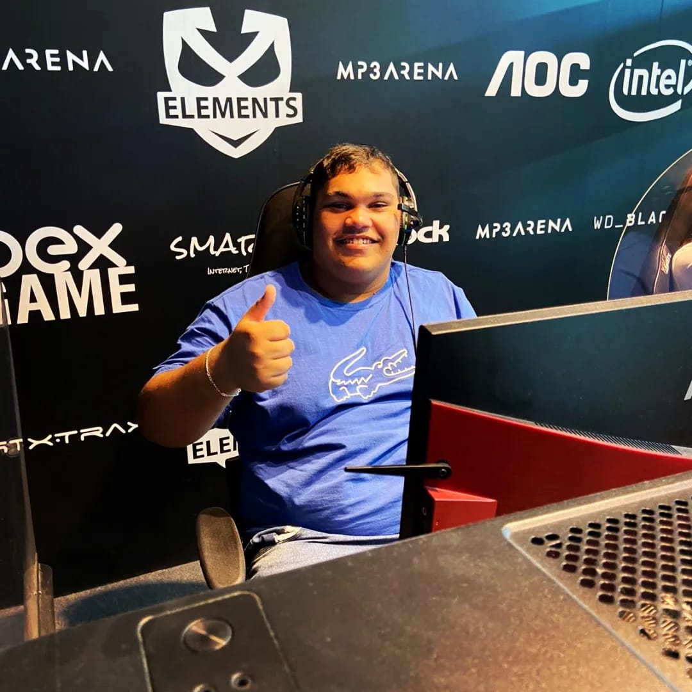

Quem sou eu?
Sou Ângelo, da vila esmeralda, tenho 17 anos, e estou no ensino medio na escola minuano, gosto de games, gosto de programar, gosto de informatica, e gosto de alguns animes.
Algumas curiosidades sobre mim, alguns jogos que gosto, minhas motivações...
O que gosto de fazer no tempo livre?
No meu tempo livre, jogo alguns jogos com meus amigos como Warzone, Fortnite MultiVersus... Olho videos no youtube de comedia, escuto algumas musicas, pesquiso receitas facil para fazer, e se tenho as coisas em casa tento fazer.
Qual esportes eu gosto?
Não sou muito fã de esportes, mais jogo futebol, volei gosto de jogar um taco com meus amigos, não é muito facil mas sejuntar uma galera maneira fica daora, curto um skate também, mas espcificamente o meu long, que combina mais comigo.
O que me motiva?
Acho que o que mais me motiva a estudar, ir noites em claro estudando, programando, é dar o futuro que minha mãe e meu pai merecem, e tirar eles dos trabalhos de para passarmos mais tempo juntos.
Como é minha personalidade?
Minhas características mais marcantes são, sou bastante extrovertido, engraçado e estou quase sempre, de bem com a vida é dificil ver esse menino sem um sorriso, no rosto pode estar no seu pior dia, mas Como diria Dory: "continue a nadar".
Um pouco sobre minha familia
Moro com minha mãe, meu pai e minhas irmãs Daniela e Carol nossas fontes de inspiração, são muito esforçadas nos estudos, e lutam para conquistar oque elas querem, e acredito muito nelas, tem também meus pais que acordam cedo e chegam a tarde, meu cunhado também é bem trabalhador jogamos video game e futebol.
Desenvolvedor Ângelo Neves